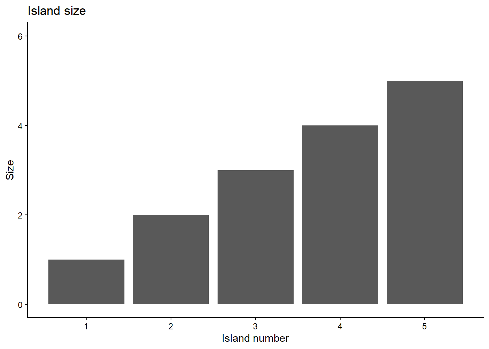
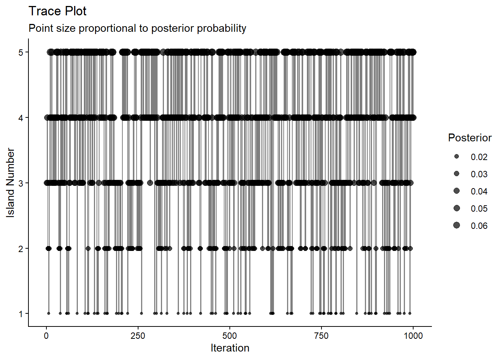

MCMC-sampling
BADT
Learning goals
describe what is a Markov chain monte carlo (MCMC)
describe the purpose and applicability range of MCMC
compare the strength and weakness of MCMC with other posterior estimation methods
develop a simple MCMC (complete exercise 3)
describe MCMC diagnostics
Beta-binomial conjugation
Binomial likelihood:
n Bernoulli trials with y successes and unknown probability of success \(\theta\).
\[ \text{Binomial}(n, y,\theta) \]
The prior is a beta distribution:
\[ Beta(\alpha, \beta) \]
Conjugation: the posterior distribution is also a beta distribution:
\[ Beta(\alpha + y, \beta + n - y) \]
Posterior computation
Analytical solution: conjugation often impossible
Grid approximation: possible but efficiency drops exponentialy with dimension
LaPlace approximation: assumption of multivariate normality often not applicable
Markov Chain Monte Carlo (MCMC): flexible, efficient
What is MCMC
- Markov chain
- Markov process: \(f(t+1)=g(f(t),noise)\)
- Chain
- Monte Carlo: a large number of samples can approximate the distribution
MCMC transforms the question:
FROM:
Getting the posterior distribution
TO
Getting enough representative samples from the posterior distribution
Example: Island hopping
Make a proposal.
Acceptance ratio \(p_{prop}=\frac{poposal}{current}\).
If \(p_{prop}\) > 1, move; if \(p_{prop}\)=1, stay.
If \(p_{prop}\) < 1, generate a random value k between (0,1). If \(k<p_{prop}\), then move.
repeat 1-4.
Simulate the hopping process
Number of islands (parameter values) unknown in reality.
Let’s first compute the posterior manually.
Prior: no knowledge of the islands
prior_function <- function(island) {
return(1/num_island) # Uniform prior
}Likelihood: proportional to relative population of each island
likelihood_function <- function(island) {
return(island / sum(1:num_island)) # Proportional to island size
}Therefore, posterior = prior * likelihood / marginals
true_posterior <- sapply(1:num_island, function(i) {
prior_function(i) * likelihood_function(i)
})
true_posterior <- true_posterior / sum(true_posterior) # marginalize
names(true_posterior) <- paste0("Island ",1:num_island)
true_posterior Island 1 Island 2 Island 3 Island 4 Island 5
0.06666667 0.13333333 0.20000000 0.26666667 0.33333333 Now compute the posterior with MCMC
num_iterations <- 1e3
starting_island <- 3
# store the positions
chain <- numeric(num_iterations)
prior_values <- numeric(num_iterations)
likelihood_values <- numeric(num_iterations)
posterior_values <- numeric(num_iterations)
# Calculate values for initial position
chain[1] <- starting_island
prior_values[1] <- prior_function(chain[1])
likelihood_values[1] <- likelihood_function(chain[1])
posterior_values[1] <- prior_values[1] * likelihood_values[1] # Unnormalized posterior
# Store jump decisions for analysis
accepted <- logical(num_iterations - 1)
acceptance_ratios <- numeric(num_iterations - 1)
for(i in 2:num_iterations){
current <- chain[i-1]
# Propose a move: randomly jump to an adjacent island
jump <- sample(c(-1,1), 1)
proposed <- current + jump
# Handle boundaries with wrap-around
if (proposed < 1) proposed <- num_island
if (proposed > num_island) proposed <- 1
# random walk proposal
# proposed <- current + rnorm(1,proposal_mean,proposal_sd)
# compute acceptance ratio
# current position
prior_current <- prior_function(current)
likelihood_current <- likelihood_function(current)
posterior_current <- prior_current * likelihood_current # Unnormalized
# proposed position
prior_proposed <- prior_function(proposed)
likelihood_proposed <- likelihood_function(proposed)
posterior_proposed <- prior_proposed * likelihood_proposed # Unnormalized
acceptance_ratio <- posterior_proposed / posterior_current
acceptance_prob <- min(1, acceptance_ratio)
# Store the computed values
prior_values[i-1] <- prior_current
likelihood_values[i-1] <- likelihood_current
posterior_values[i-1] <- posterior_current
acceptance_ratios[i-1] <- acceptance_prob
# decide the jump
if (runif(1) < acceptance_prob) {
chain[i] <- proposed
accepted[i-1] <- TRUE
} else {
chain[i] <- current
accepted[i-1] <- FALSE
}
}Now summarize the results from MCMC
prior_values[num_iterations] <- prior_function(chain[num_iterations])
likelihood_values[num_iterations] <- likelihood_function(chain[num_iterations])
posterior_values[num_iterations] <- prior_values[num_iterations] * likelihood_values[num_iterations]
# Calculate empirical frequencies from MCMC samples
mcmc_freq <- table(chain) / num_iterations
mcmc_df <- data.frame(
island = 1:num_island,
mcmc_prob = as.numeric(mcmc_freq),
true_posterior = true_posterior
)
mcmc_df island mcmc_prob true_posterior
Island 1 1 0.058 0.06666667
Island 2 2 0.160 0.13333333
Island 3 3 0.225 0.20000000
Island 4 4 0.254 0.26666667
Island 5 5 0.303 0.33333333Trace the move
# Trace plot with acceptance indicators
trace_df <- data.frame(
iteration = 1:num_iterations,
island = chain,
accepted = c(NA, accepted),
posterior = posterior_values
)
p_trace <- ggplot(trace_df, aes(x = iteration, y = island)) +
geom_line(alpha = 0.5) +
geom_point(aes( size = posterior), alpha = 0.7) +
# scale_color_manual(values = c("FALSE" = "red", "TRUE" = "green"),
# na.value = "black", name = "Accepted") +
scale_size_continuous(name = "Posterior", range = c(1, 3)) +
scale_y_continuous(breaks = 1:num_island, limits = c(1, num_island)) +
theme_classic() +
labs(title = "Trace Plot",
subtitle = "Point size proportional to posterior probability",
x = "Iteration",
y = "Island Number")
p_trace
Summary of hopping
When repeated enough times, frequency on any island matches the relative population of the island.
Three critical things:
known your position and adjacent options
making a proposal and knowing the population of the proposal
knowing the population of the current, to calculate the acceptance ratio \(p_{prop}=\frac{proposal}{current}\).
Metropolis algorithm

Island hopping is a special case, Metropolis algorithm could handle:
continuous positions
more than one dimension
complex proposals
\[ y=\beta_0 + \beta_1 x + \epsilon \]
Model:
\[ \begin{equation} \begin{split} \epsilon \sim N(0,\sigma^2) \\ y \sim N(\beta_0 + \beta_1 x, \epsilon) \end{split} \end{equation} \]
\(\beta_0, \beta_1\) are parameters
Likelihood:
\[ p(Y|\beta_0,\beta_1,\epsilon,x)=\prod_i^{n} \frac{1}{\sqrt{2\pi \sigma^2}}exp(-\frac{(y-(\beta_0+\beta_1 x))^2}{2\sigma^2}) \]
Priors:
\(\beta_0 \sim N(0,5)\).
How does the island hopping analogy work here?
Exercise 3
Complete Ex 3: today and beginning of tomorrow’s session.
MCMC diagnostics
Before accepting MCMC results, how good they are?
Trace plot: biased by the arbitrary starting value? fully explore the posterior range?
Rhat/ Gelman-Rubins statistics: convergence of multiple chains, also shown in the trace plot
Effective sample size: measures chain accuracy- how many independent sampling steps for the chain to approximate the posterior
Autocorrelation: also shows chain accuracy- strong correlation between steps that are one or two steps apart breaks Markov process
Read the Bayes rule book chapter 6.3 and DBDA chapter 7.5 for technical details and examples.